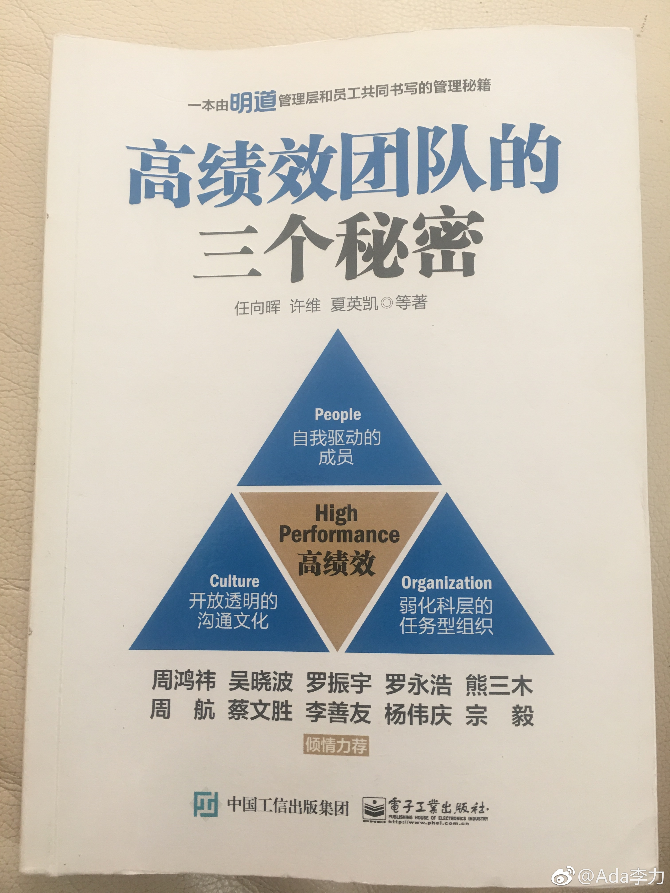

#读书#明道团队是国内推广OKR的主力军，下一个创业项目里，我计划完完整整地实践下。之前只是电商部门内尝试，有捉襟见肘，不伦不类的感觉。 @任向晖 在“怎样帮助团队养成任务管理的好习惯”一文借用了《上瘾》这本书里的模型，四个不断循环的过程：触发 - 行动 - 多变的酬赏 - 投入 给我很大启发。我之前读这本书时，只是把用户作为考虑对象，觉得难点在触发和行动上。把员工作为对象来实践，前两个过程容易，而多变的赏酬需则要多花些心思。